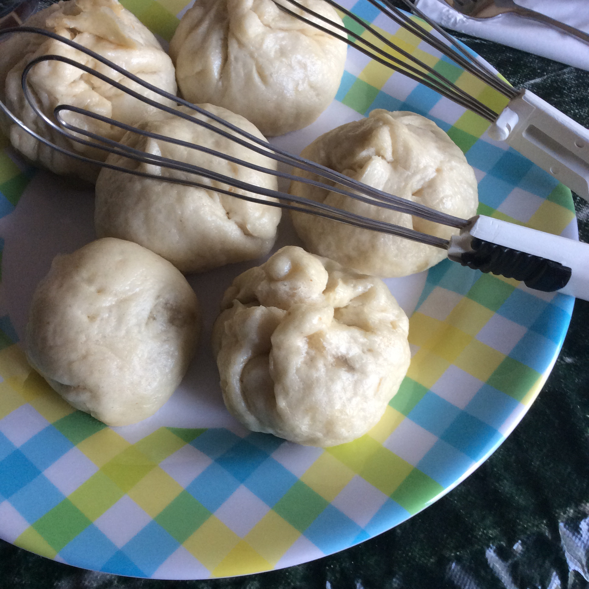

Chinese Pork Buns

Delicious Pork buns from Chinese bakeries
Tastes great like bread.
Ingredients
- 6 cups all-purpose flour
- ¼ cup white sugar
- 1 ¾ cups warm water (110 degrees F/45 degrees C)
- 1 tablespoon active dry yeast
- 1 tablespoon baking powder
- 2 tablespoons shortening
- 1 pound finely chopped pork
- 1 ½ tablespoons light soy sauce
- 1 ½ tablespoons hoisin sauce
- 1 teaspoon soy sauce
- 1 ½ tablespoons white sugar
- 1 ½ tablespoons soy sauce
- 1 ½ tablespoons oyster sauce
- 1 cup water
- 2 tablespoons cornstarch
- 2 ½ tablespoons water
- 2 tablespoons shortening
- 1 ½ teaspoons sesame oil
- ¼ teaspoon ground white pepper
Steps
- Dissolve 1/4 cup sugar in 1 3/4 cups warm water, and then add the yeast. Let stand for 10 minutes, or until mixture is frothy. Sift the flour and baking powder into a large bowl. Stir in 2 tablespoons shortening and the yeast mixture; mix well.
- Knead the dough until smooth and elastic. Place the dough in a greased bowl, and cover it with a sheet of cling wrap. Let the dough rise in a warm place for about 2 hours, or until it has tripled in bulk.
- Cut the pork into 2 inch thick strips. Use fork to prick it all over. Marinate for 5 hours in a mixture made with 1 1/2 tablespoons light soy sauce, 1 1/2 tablespoons hoisin sauce, and 1 teaspoon sweet soy sauce. Grill the pork until cooked and charred. Cut roasted port into 1/2 inch cubes.
- Combine 1 1/2 tablespoons sugar, 1 1/2 tablespoons soy sauce, oyster sauce, and 1 cup water in a saucepan. Bring to the boil. Mix cornstarch with 2 1/2 tablespoons water; add to the saucepan, and stir until thickened. Mix in 2 tablespoons lard or shortening, sesame oil, and white pepper. Cool, and mix in the roasted pork.
- Remove the dough from the bowl, and knead it on a lightly floured surface until it is smooth and elastic. Roll the dough into a long roll, and divide it into 24 pieces. Flatten each piece with the palm of the hand to form a thin circle. The center of the circle should be thicker than the edge. Place one portion of the pork filling in the center of each dough circle. Wrap the dough to enclose the filling. Pinch edges to form the bun. Let the buns stand for 10 minutes.
- Steam buns for 12 minutes. Serve.